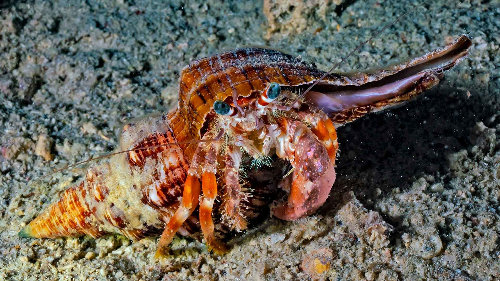
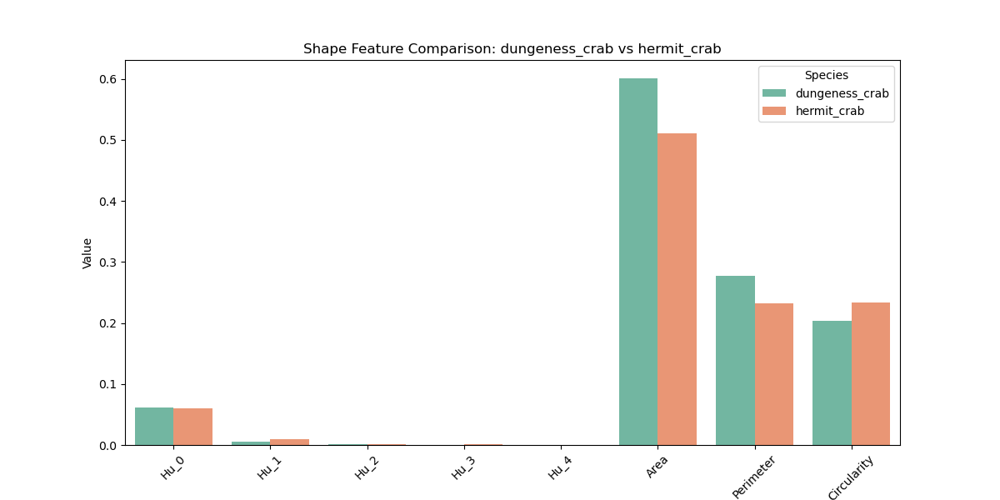
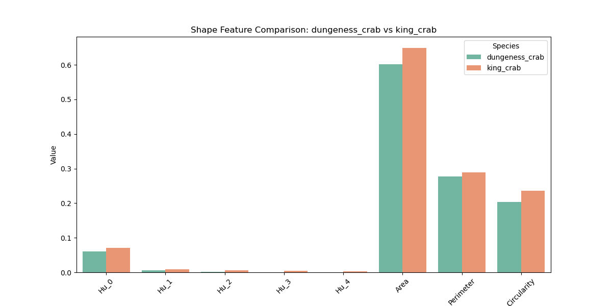
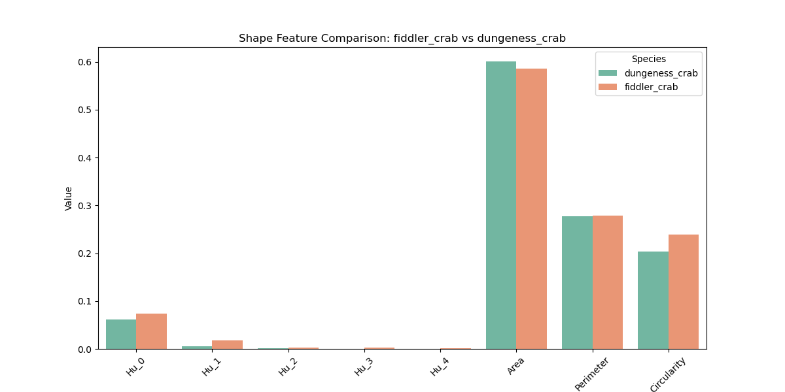
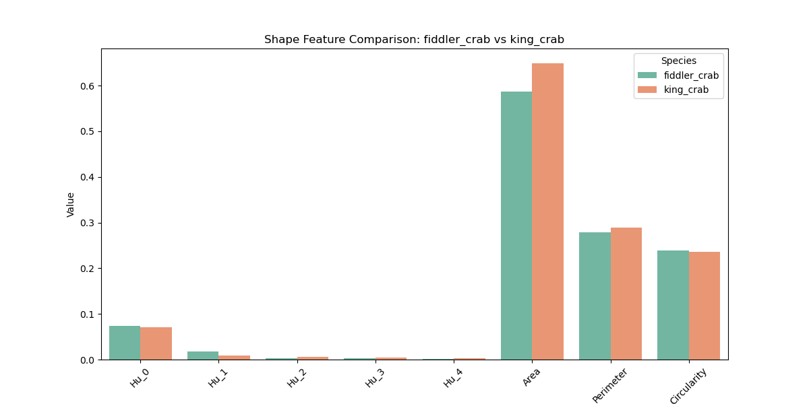
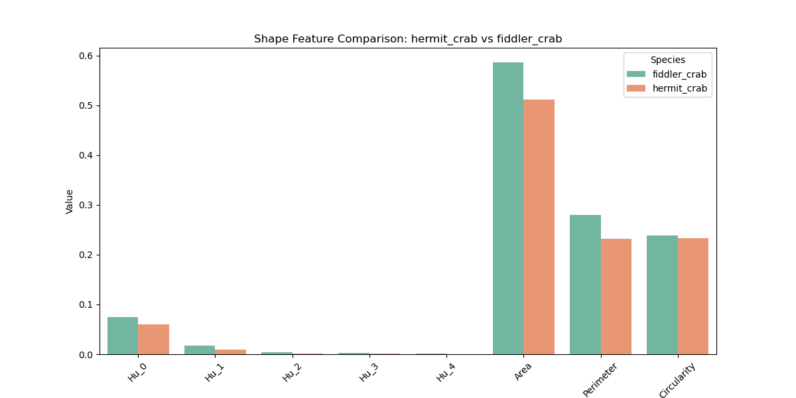
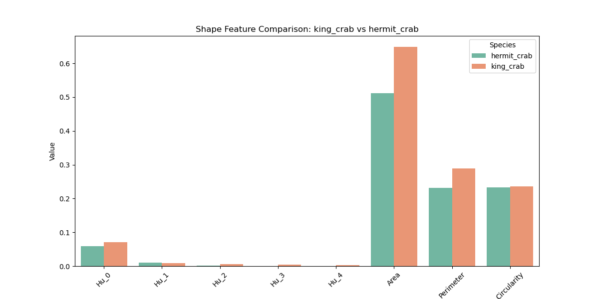
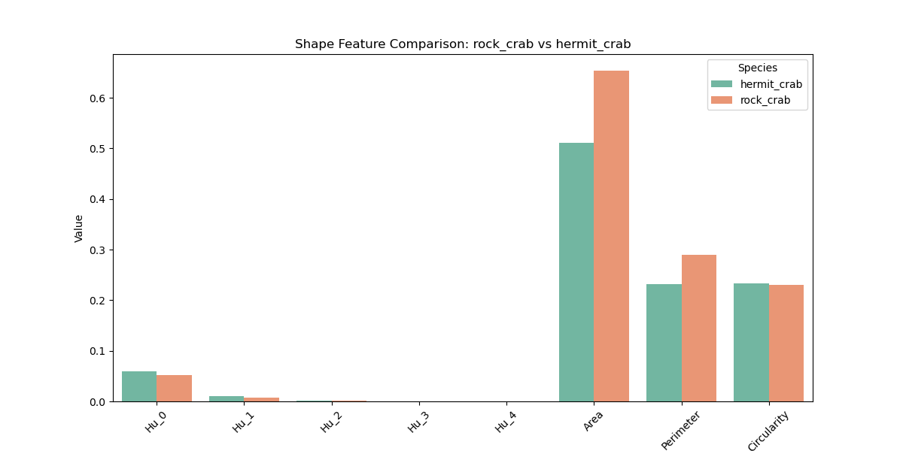
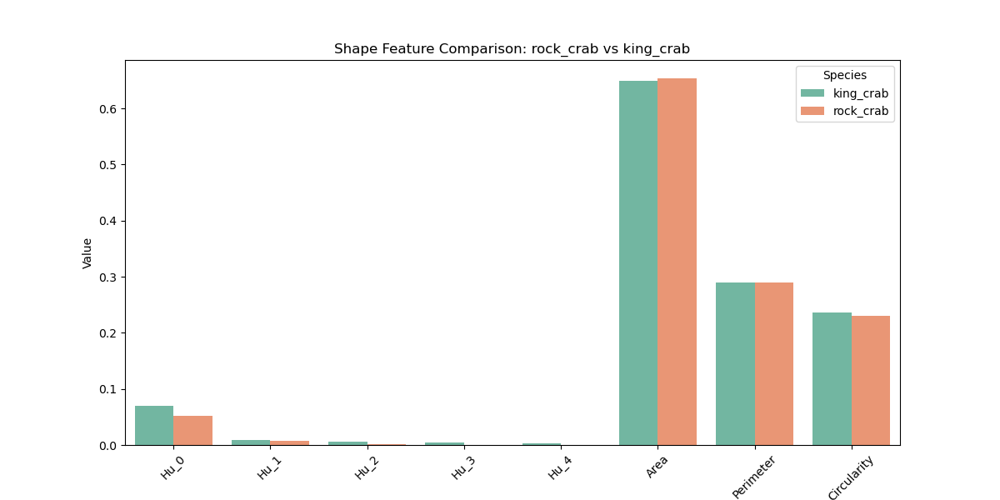

Home

Shape-Feature Analysis
Analyze crab body stuctures and shape patterns with Hu Moments,
a set of 4 (7 in total) numbers calculated using central moments
that are invariant to image transformations.
Species-Based Shape-Feature Comparison
Dungeness Crab


Fiddler Crab


Hermit Crab

King Crab

Rock Crab


Shape-Feature Heatmap
Shape-Feature Correlation
×
×